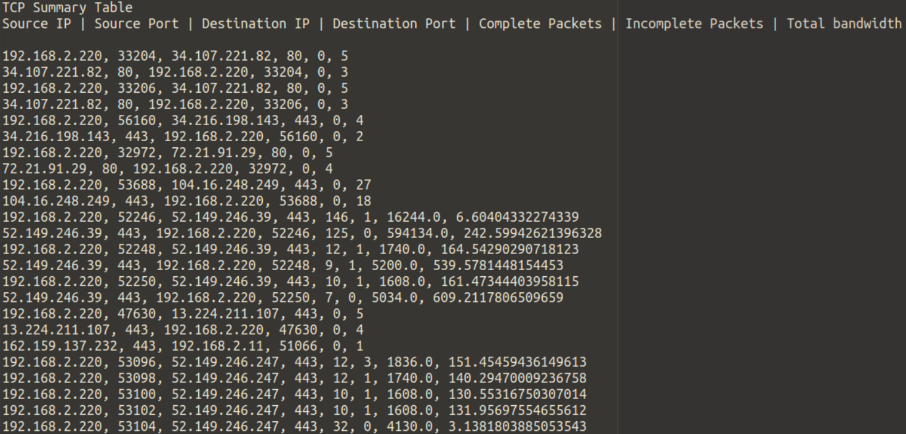

March 27th, 2021
Company Payroll Application
Designed a GUI using JavaFX and implemented an application to add, edit, and remove employee profiles from a database. Users can import or export files to modify and the application supports a number of filtering and sorting methods.(Java, JavaFX)
Implemented a relational database system to support the operations of an online
train reservation system. The program allows users to view available train schedules, ask questions in a
forum, and supports a range of user types. (Java, JSP, Apache, MySQL, JDBC, AWS)
Implemented a web server in Java which supports GET, POST, and HEAD requests. Allows for multiple users to connect concurrently and includes functionality to store cookies.(Java, HTML)

Implemented a clone of Wireshark which identifies TCP flows and information about other protocols such as UDP and ICMP from a pcap file. The program produces a report of completed/incomplete packets, average bandwidth, and source/destination information. (Java, Maven)

Created a cache simulator which can evaluate different formats of caches’. This simulator allows for the user to customize cache size, associativity, and the replacement policy. (C)